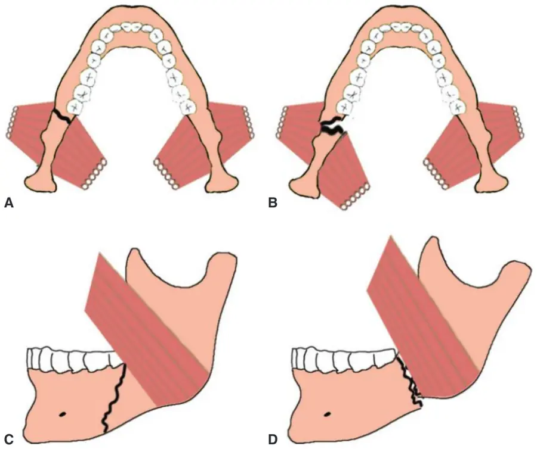
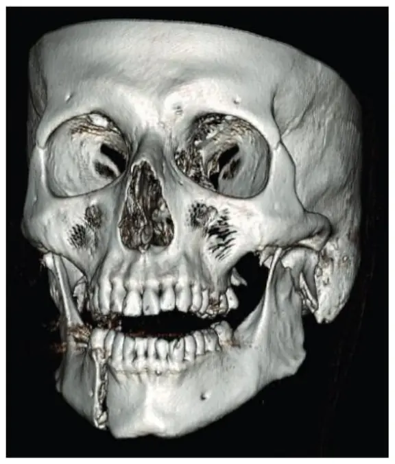

نسخه استخراجشده؛ ترجمه یا تأیید علمی انجام نشده است. وضعیت: captured
شکستگی مندیبل، همان چهار نشانهی درس یکم را نشان میدهد — ولی دو پدیدهی خاص دارد که باید بشناسی.

پدیدهی یکم — دو خط رادیولوسنت بهجای یکی: یک مورد گزارششده هست با «دو خط رادیولوسنت که به سمت مرز تحتانی همگرا میشوند؛ ظاهری که وقتی پرتو مورب بر صفحهی شکستگی باشد پدید میآید». یعنی دیدن دو خط، لزوماً به معنای دو شکستگی نیست.
پدیدهی دوم — شکستگی که اوپک دیده میشود: «یک شکستگی دوم در زاویهی چپ مندیبل حاضر است و بهدلیل سوپرایمپوزیشن قطعات، رادیواوپک به نظر میرسد.» همان نشانهی چهارم درس یکم، در عمل.
و نشانهی بالینی کلاسیک: «نقص پلهای» تیز در صفحهی اکلوزال مندیبل با اپنبایت. و شکستگیهای مندیبل اغلب چندگانهاند — مثلاً شکستگی همزمان در زاویهی یک سمت و سمفیز سمت مقابل.
و در شکستگی سمفیز، عضله جهت جابهجایی را تعیین میکند: یک مورد گزارششده هست که در آن «توبرکولهای ژنیال روی قطعهی مرکزی قرار دارند و این قطعه توسط عضلات متصل به توبرکول ژنیال جابهجا شده است»، و سمفیز شکسته در جهت لینگوال جابهجا میشود.
و همین اصل، کل منطق جابهجایی قطعات را میسازد: جهت جابهجایی هر قطعه را عضلاتی که به آن چسبیدهاند تعیین میکنند، نه جهت ضربه. اگر بدانی چه عضلهای به کدام قطعه چسبیده، جهت جابهجایی را پیشبینی میکنی.
و مدیریت: «بیشتر شکستگیهای مندیبل با ریداکشن بسته و فیکساسیون اینترماگزیلاری قابل مدیریتاند.»
و یک تصمیم درمانی که به تصویر تو بستگی دارد: «وقتی صفحهی شکستگی یک یا چند دندان بهشدت لق را در بر میگیرد، یا اگر اکسپوز ریشهی قابل توجهی درون صفحهی شکستگی وجود داشته باشد، دندانهای درگیر اغلب کشیده میشوند تا خطر عفونت و مشکلات فیکساسیون کاهش یابد.» و اگر قرار باشد نگه داشته شوند، آنتیبیوتیک اغلب به درمان افزوده میشود.
شکستگی زائدهی کندیلار میتواند گردن یا سر کندیل را درگیر کند — و شکستگیهای گردن کندیل شایعترند.

و جهت جابهجایی سر کندیل، دوباره از عضله میآید: شکستگی گردن «معمولاً به جابهجایی سر کندیل در جهت مدیال، تحتانی و قدامی» میانجامد — نتیجهی کشش عضلهی پتریگوئید خارجی که از صفحهی پتریگوئید خارجی به کندیل میرسد.
و شکستگی سر کندیل شکل دیگری دارد: «یک صفحهی عمودی منفرد که سر کندیل را به دو قطعه جدا میکند، یا قطعات متعدد.» و یک عدد مهم: «تقریباً نیمی از بیماران با شکستگی کندیل، شکستگی در بدنهی مندیبل هم دارند.» یعنی دیدن یک شکستگی، پایان جستوجو نیست.
و نشانههای بالینی — با یک هشدار: «علائم بالینی شکستگی سر کندیل مندیبل همیشه آشکار نیستند، پس ناحیهی پرهاوریکولار باید با دقت معاینه و لمس شود.» یافتهها: درد هنگام باز و بسته کردن دهان، تریسموس از تورم موضعی، اپنبایت قدامی با تماس تنها در مولرهای دیستال، و انحراف مندیبل هنگام باز کردن.
و یک یافتهی بالینی با توضیح آناتومیک زیبا: «ویژگی مهم میتواند ناتوانی بیمار در پروترود کردن مندیبل باشد، چون عضلهی پتریگوئید خارجی به کندیل چسبیده است» — و آن کندیل حالا از بقیهی مندیبل جدا شده.
و مهمترین بخش این اسلاید — پتانسیل ریمادلینگ، که کاملاً وابسته به سن است:
و یک قاعدهی دوم دربارهی ریمادلینگ: گسترهی ریمادلینگ «در شکستگیهای سر کندیل بیشتر از شکستگیهای گردن کندیل با جابهجایی سر» است. و پنج بدشکلی شایع پس از ترمیم: انحراف مدیال کندیل، شکل غیرطبیعی کندیل، کوتاه شدن گردن، فرسایش، و صاف شدن.
و یک پیامد رشدی که باید در کودکان بدانی: «شکستگیهای زودهنگام کندیل معمولاً به هیپوپلازی مندیبل همان سمت میانجامند» — یعنی یک تروما در کودکی میتواند سالها بعد بهصورت عدم تقارن صورت دیده شود.
و مدیریت: شکستگیهای کندیل «با ریداکشن بسته در هم بزرگسالان و هم کودکان با موفقیت مدیریت میشوند»، با دورهای از فیکساسیون اینترماگزیلاری. سه هدف درمان: رفع علائم حاد، بازگرداندن روابط آناتومیک درست، و پیشگیری از آنکیلوز استخوانی. و ریداکشن باز گردن کندیل «بهدلیل خطر عوارض روش و اندازه و موقعیت قطعات، محدود است».